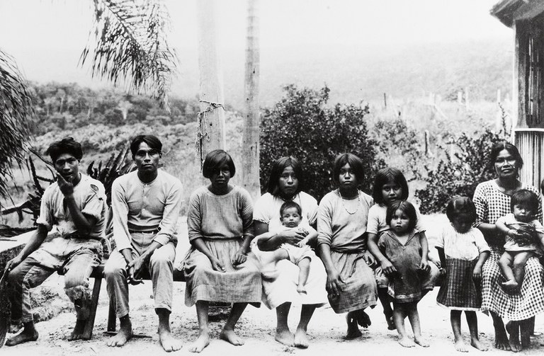

Povos originários e ocupação do território · Acontecimento 02 de 08
Presença dos povos indígenas Guarani, Xokleng (Laklãnõ) e Kaingang
Contexto histórico e presença indígena em Santa Catarina

1. Os três povos
Antes da chegada dos europeus, o território hoje catarinense era ocupado pelos Guarani, pelos Kaingang e pelos Laklãnõ-Xokleng. [3] Os três povos mantêm vivas suas línguas, seus modos de vida e seus conhecimentos tradicionais. [4]
Povo Guarani
Origem e presença histórica
Os Guarani migram desde tempos pré-coloniais, dispersando-se a partir da região amazônica central. [6] No século XVI, quando chegaram os espanhóis, ocupavam uma ampla extensão de terras baixas, do litoral de Santa Catarina até as franjas da cordilheira dos Andes. [5] No litoral sul e sudeste do Brasil, os Mbya e os Chiripa/Nhandeva vivem hoje onde viveram seus ancestrais, os Carijó-Guarani, até o desaparecimento deles no século XVII. [7]
Organização social e familiar
A teko'a é a terra tradicional e o espaço onde a cultura guarani se realiza. Cada uma é formada por uma família extensa, que constitui um ente sociopolítico, econômico e territorial autônomo e é a estrutura básica dessa sociedade. [1] Caciques e pajés têm funções distintas: o pajé traz curas por meio dos espíritos protetores e transmite o saber dos antepassados, enquanto o cacique tem papel mais administrativo. [1]
Língua e espiritualidade
As línguas guaranis pertencem ao tronco Tupi. Entre suas variedades estão o Nhandeva, o Mbya, o Ava Guarani e o Kaiowa, que são próximas e permitem a compreensão entre falantes. [1] Os saberes passam pela oralidade, por mitos, cantos e rezas. A música e a dança homenageiam os antepassados, e os cantos e instrumentos são usados para chamar os deuses. [1]
Existe também uma “língua espiritual”, que nomeia os elementos de modo mais respeitoso e profundo. O rio, por exemplo, é yy, enquanto pará indica seu caráter espiritual. A terra onde se planta é ywy, e a “terra sem males” é ywy uju. [1]
Mobilidade territorial
Quem vive na aldeia Itaty, em Palhoça, desloca-se com frequência pelo litoral, do Rio Grande do Sul ao Rio de Janeiro. Muitas vezes, as viagens são para ajudar outras comunidades em datas importantes, como as celebrações na Opy, a casa de reza. [1] Um estudo de ecologia histórica sustenta que a ocupação guarani de áreas florestais contribuiu para conservar e ampliar a biodiversidade em Santa Catarina e no Paraná entre os séculos XVI e XX. [6]
Comunidades hoje
Entre as comunidades catarinenses estão Itaty (Morro dos Cavalos) e Pirarupá, em Palhoça, Marangatu, em Imaruí, e Yy Moroti Verá, em Biguaçu. Nelas se produzem cestaria e artesanato em madeira, e a língua guarani é usada em casa, na casa de reza e, em alguns casos, na escola. [1]
Povo Laklãnõ-Xokleng
Ocupação histórica
O território tradicional não tinha contornos bem definidos. No contato, incluía a Mata Atlântica do litoral e da encosta da serra e as bordas do planalto de mata de araucárias. [8] A atual Terra Indígena Ibirama fica no alto Vale do Itajaí. [12]
Modos de vida e relação com a mata
Eram coletores, caçadores e seminômades, organizados em pequenos grupos. [11] A alimentação vinha do pinhão, da caça e da coleta de frutos silvestres; os grupos se encontravam periodicamente para confraternizações e rituais. [9] Segundo um estudo, grupos de duas a oito famílias se espalhavam por diferentes partes do território para intensificar a caça e a coleta. [10]
Organização social atual
Na terra indígena, os Xokleng vivem em oito aldeias, todas com autonomia política, e um cacique-presidente dá unidade ao povo perante as instituições. A organização se dá em núcleos familiares: parentes próximos vivem perto uns dos outros e dividem os frutos do trabalho. [2]
Língua
A língua xokleng pertence ao tronco macro-jê. [1] Desde 1992, por iniciativa de Nanblá Gakran, o idioma é revitalizado nas escolas da terra indígena, com um dicionário xokleng-português e um livreto de lendas nos dois idiomas. [2]
Povo Kaingang
Ocupação do planalto e do oeste
Em Santa Catarina, a Terra Indígena Xapecó fica entre os municípios de Ipuaçu e Entre Rios, no oeste do estado, e é de uso tradicional das comunidades Kaingang, com presença também de Guarani. [24] A região de Fraiburgo, no planalto, está na fronteira da ocupação tradicional Kaingang/Xokleng. [16] Segundo um artigo de 2016, os Kaingang somavam cerca de 6.500 pessoas em Santa Catarina, distribuídas em cinco terras indígenas e uma reserva. [14]
Organização social
A sociedade Kaingang se divide em metades complementares, Kamé e Kairu. [14] Outro estudo descreve essas metades como exogâmicas, que se opõem e se complementam, e acrescenta quatro seções ou clãs. [24]
Língua, cultura e tradições
A língua Kaingang pertence à família Jê, do tronco macro-jê. Uma classificação lista cinco dialetos; o dialeto central é falado entre os rios Iguaçu e Uruguai, em Santa Catarina. [1] Os Kaingang passaram a valorizar a língua materna como elemento político para afirmar a legitimidade de suas lutas pela terra. [1]
Relação com os territórios e recursos naturais
O território é suporte material da sobrevivência física, e a coleta do pinhão é uma das atividades registradas. [16]
Conflitos territoriais, aldeamentos e resistência
A relação mais intensa com não indígenas começou com a ocupação dos territórios Kaingang na primeira década do século XIX. [14] Os aldeamentos foram criados em meados do século XIX. [15] Ao longo do século XX, a Terra Indígena Xapecó foi reduzida a pouco mais de 15 mil hectares por não indígenas interessados em terras e recursos naturais; os Kaingang ficaram com cerca de 30% do território inicial. [13]
2. A ocupação indígena e a colonização
A. Território antes da colonização
Os Laklãnõ-Xokleng migravam por um território amplo, e sua forma de se apropriar do espaço era diferente dos modelos urbanos europeus. [11] Entre os Kaingang, o território era suporte material da sobrevivência física. [16]
B. Avanço da colonização
A relação mais intensa entre os Kaingang e os não indígenas começou na primeira década do século XIX, [14] e os aldeamentos Kaingang surgiram em meados desse século. [15] Os Laklãnõ foram empurrados pela colonização para um território muito menor que o histórico. [9]
C. Violência e expropriação territorial
No século XIX, bugreiros especializados em atacar e destruir aldeias inteiras eram contratados pelos governos provinciais do Paraná, do Rio Grande do Sul e de Santa Catarina. [2] Segundo um trabalho acadêmico, entravam na mata, atacavam de surpresa os acampamentos e matavam todos que encontravam; em alguns casos, crianças eram levadas para orfanatos. [9] No oeste, a redução da Terra Indígena Xapecó seguiu um padrão de expropriação. [13]
D. Políticas indigenistas
- O contato de 1914 e o SPI: o primeiro contato oficial com os Xokleng foi em 1914. O SPI, criado em 1910, serviu em grande medida para “pacificar” os indígenas e viabilizar a estrada de ferro São Paulo–Rio Grande e a concessão de terras a colonos. Nos 20 anos seguintes, dois terços dos Xokleng morreram em epidemias de gripe, febre amarela e sarampo. Duas famílias Kaingang colaboraram com o SPI em troca do usufruto das terras e, desde então, são frequentes os casamentos entre Kaingang e Xokleng. [2]
- Redução do território: o órgão indigenista reduziu o território ocupado pelos Laklãnõ de 40 mil para 15 mil hectares, embora a Lei nº 601, de 1850, já reconhecesse direitos indígenas sobre os territórios. [2]
- Barragem Norte: na década de 1970, o órgão indigenista autorizou a barragem para proteger do alagamento as cidades de Ibirama, Indaial, Blumenau e Gaspar. O preço foi a inundação de cerca de mil hectares de terra produtiva indígena, onde ficavam aldeias. Os efeitos incluem famílias desabrigadas, aldeias isoladas e aulas canceladas. Segundo o Instituto Socioambiental, os indígenas não foram devidamente indenizados e nenhum estudo avaliou os impactos ambientais, socioculturais e psicológicos. [2]
- Demarcação: a Funai criou um grupo de trabalho em 1998 e, em 2003, o Ministério da Justiça publicou a Portaria Declaratória. A Terra Indígena Ibirama-La Klaño tem 37 mil hectares e abriga Xokleng, Guarani e Kaingang. [2] Em setembro de 2023, no Tema 1031, o STF definiu que o marco temporal é inconstitucional. [22] [19] O povo Xokleng questionou no STF dispositivos da Lei nº 14.701/2023, que trata do tema. [20] O andamento mais recente desse processo não foi confirmado.
3. Resistência e presença indígena na atualidade
Retomadas
A retomada do Território Goj Konã, no Parque Nacional da Serra do Itajaí, em Blumenau, é uma estratégia de luta do povo Laklãnõ Xokleng. [9]
Língua e conhecimentos tradicionais
Entre os Kaingang, a língua materna passou a ser valorizada politicamente para afirmar a legitimidade das lutas pela terra. Entre os Xokleng, a língua é falada pela maioria na reserva e, após uma queda no uso, voltou a ser valorizada, inclusive na forma escrita. [1]
Educação escolar
A maioria dos indígenas vive em terras demarcadas, onde recebe educação diferenciada bilíngue, entre outros serviços. [17]
Cidades
Todo o estado, inclusive as áreas urbanas, sempre foi território de circulação indígena. [17] Segundo reportagem da NSC, a população indígena catarinense é de 21.773 pessoas. Cerca de 49,6% vivem em terras próprias, e a maior parte do restante vive em comunidades urbanas. [18]
Lideranças
Tukun Gakran, liderança da Ibirama-Laklãnõ, afirma que o povo quer o espaço onde vivia, e não tomar a terra de não indígenas. [23]
Fontes consultadas
- TJSC, Gestão Socioambiental. “Línguas e cultura indígena em foco”. Acessar fonte.
- Câmara dos Deputados, CDHM (2020). “Quem são os Xokleng, os indígenas que podem mudar a trajetória jurídica das demarcações”. Acessar fonte.
- Peres, J. “A lei de terras e os Laklãnõ-Xokleng em Santa Catarina (1850-1890)”. Acessar artigo.
- ALESC. Documento legislativo. Acessar documento.
- “Os Guarani, fronteiras nacionais e mobilidade transfronteiriça”. Interethnica, UnB. Acessar artigo.
- “Colonialismo, migrações e território guarani”. Dialnet. Acessar artigo.
- Litaiff, A. “Sem tekoa não há teko, sem terra não há cultura”. Espaço Ameríndio. Acessar artigo.
- Machado, J. S. “Caminhos e paradas: perspectivas sobre o território Laklãnõ (Xokleng)”. Acessar artigo.
- Pinheiro, E. “Retomada Território Goj Konã”. UFSC. Acessar trabalho.
- Encina, M. “A história dos povos Xokleng e o direito à educação indígena”. FURB. Acessar artigo.
- Mello, B. et al. “Comparativa entre a ocupação do espaço dos povos Laklãnõ-Xokleng e a colonial do Vale do Itajaí”. UNISC. Acessar trabalho.
- Santos, S. C. “Lideranças indígenas, indigenismo oficial e destruição florestal: o caso de Ibirama”. Acessar artigo.
- Almeida, C. S.; Nötzold, A. L. V. “A luta pela terra em território Kaingang: os conflitos na Terra Indígena Xapecó”. Acessar artigo.
- Revista Santa Catarina em História, v. 10, n. 1, 2016 (Kaingang). Acessar artigo.
- Aquino, A. M. “Movimentos kaingang e as controvérsias do Grande Divisor”. Espaço Ameríndio, 2020. Acessar artigo.
- Santos, R. B. “Ocupação kaingang em Fraiburgo (SC)”. Revista de Extensão, UFRGS. Acessar artigo.
- FUNAI. “Presença indígena urbana em SC” (2018). Acessar documento.
- NSC Total. “Indígenas de SC lutam para manter cultura viva com projetos para preservar costumes e idioma”. Acessar reportagem.
- Folha Vitória. “Por 9 votos a 2, Supremo invalida tese do marco temporal”. Acessar reportagem.
- AGU. Manifestação na ACO 1100 sobre a Lei nº 14.701/2023. Acessar documento.
- Folha de Pernambuco. “Tensão em terra indígena aumenta após decisão sobre marco temporal”. Acessar reportagem.
- Gov.br, Participa + Brasil. Documento sobre o Tema 1031, setembro de 2023. Acessar documento.
- A Tarde / Comprova. “Marco Temporal: entenda o que é e o que muda com a decisão do STF”. Acessar reportagem.
- Pesquisa sobre a Terra Indígena Xapecó. Espaço Ameríndio. Acessar estudo.